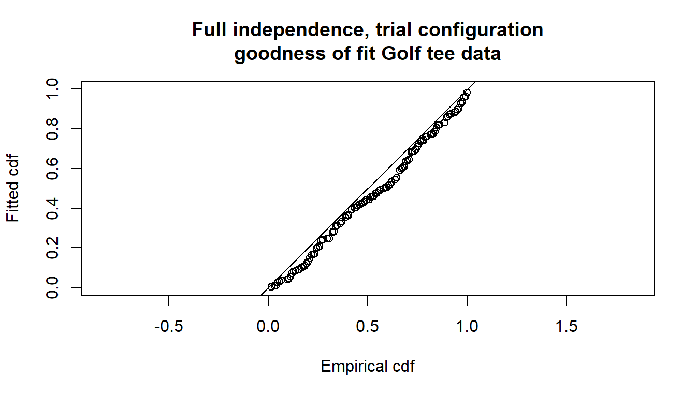
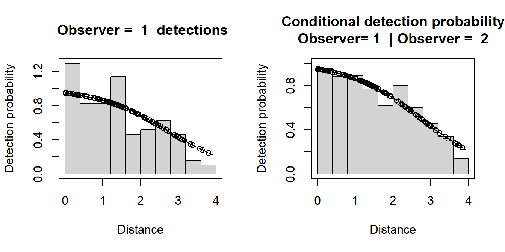
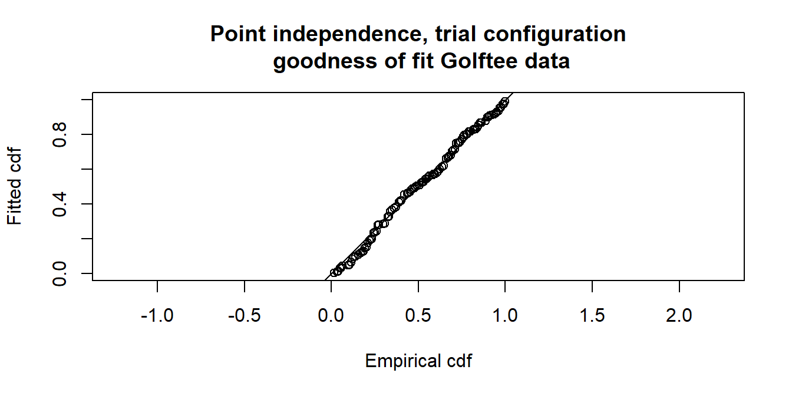
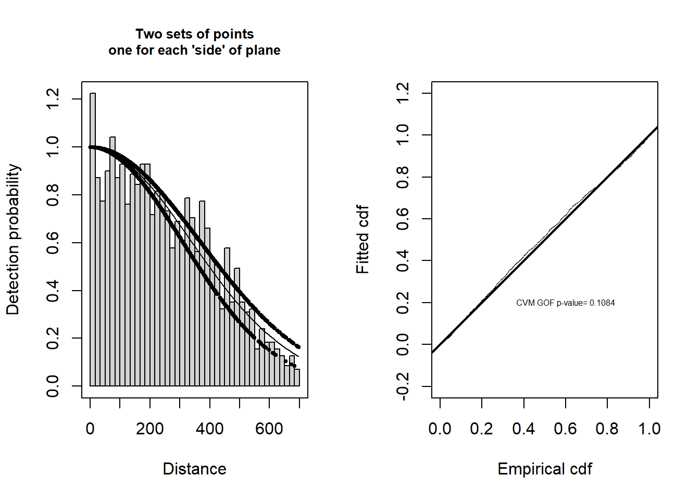

# Load libraries
library(knitr) #Used to knit this markdown document together
library(mrds)
#Note - the Distance package is also used in the Crabeater seal example, to access
# the checkdata function, and to do an MCDS analysis.
# Access the golf tee data
data(book.tee.data)
# Extract the list elements from the dataset into easy-to-access objects
detections <- book.tee.data$book.tee.dataframe # detection information
region <- book.tee.data$book.tee.region # region info
samples <- book.tee.data$book.tee.samples # transect info
obs <- book.tee.data$book.tee.obs # links detections to transects and regions
# In the detections data frame, define sex and exposure
# as factor variables
detections$sex <- as.factor(detections$sex)
detections$exposure <- as.factor(detections$exposure)Analysis of double-platform data
Analysis of double-platform data
This version of the practical is for those who would like to conduct the analysis in R using the package mrds (Laake et al., 2023). There is a separate version for conducting the analysis in Distance for Windows (Thomas et al., 2010).
The first part of this practical involves initial analysis of a survey of a known number of golf tees. This is intended mainly to familiarise you with the mrds function.
The second part of the practical involves more detailed analysis of the golf tee data, and an exploration of the double-platform data structure.
The third part of the practical involves analysis of the pack-ice seal survey data of (Borchers et al., 2006) and (Southwelll2007?).
To help understand the terminology used in MRDS and the output produced by mrds, there is a guide available ‘Interpreting MRDS output’.
1. Golf tee survey - initial analysis
Golf tee survey
These data come from a survey of golf tees which conducted by statistics students at the University of St Andrews. The data were collected along transect lines, 210 metres in total. A distance of 4 metres out from the centre line was searched and, for the purposes of this exercise, we assume that this comprised the total study area, which was divided into two strata. There were 250 clusters of tees in total and 760 individual tees in total.
The population was independently surveyed by two observer teams. The following data were recorded for each detected group: perpendicular distance, cluster size, observer (team 1 or 2), ‘sex’ (males are yellow and females are green and golf tees occur in single-sex clusters) and ‘exposure’. Exposure was a subjective judgment of whether the cluster was substantially obscured by grass (exposure=0) or not (exposure=1). The lengths of grass varied along the transect line and the grass was slightly more yellow along one part of the line compared to the rest.
The golf tee dataset is provided as part of the mrds package.
Open R and load the mrds package and golf tee dataset (called book.tee.data). The elements required for an MRDS analysis are contained within the object dataset. These data are in a hierarchical structure (rather than in a ‘flat file’ format) so that there are separate elements for observations, samples and regions. In the code below, each of these tables is extracted to avoid typing long names.
Golf tee survey analyses
Estimation of p: distance only
We will start by analysing these data assuming that Observer 2 was generating trials for Observer 1 but not vice versa, i.e. trial configuration where Observer 1 is the primary and Observer 2 is the tracker. (The data could also be analysed in independent observer configuration - you are welcome to try this for yourself). We begin by assuming full independence (i.e. detections between observers are independent at all distances): this requires only a mark-recapture (MR) model and, to start with, perpendicular distance will be included as the only covariate.
Remember that ? or help can be used to find out more about any of the functions used – e.g., ?ddf will tell you more about the ddf function.
Examining mrds output
Having fitted the model, we can create tables summarizing the detection data. In the commands below, the tables are created using the det.tables function and saved to detection.tables.
# Create a set of tables summarizing the double observer data
detection.tables <- det.tables(fi.mr.dist)
# Print these detection tables
detection.tables
Observer 1 detections
Detected
Missed Detected
[0,0.4] 1 25
(0.4,0.8] 2 16
(0.8,1.2] 2 16
(1.2,1.6] 6 22
(1.6,2] 5 9
(2,2.4] 2 10
(2.4,2.8] 6 12
(2.8,3.2] 6 9
(3.2,3.6] 2 3
(3.6,4] 6 2
Observer 2 detections
Detected
Missed Detected
[0,0.4] 4 22
(0.4,0.8] 1 17
(0.8,1.2] 0 18
(1.2,1.6] 2 26
(1.6,2] 1 13
(2,2.4] 2 10
(2.4,2.8] 3 15
(2.8,3.2] 4 11
(3.2,3.6] 2 3
(3.6,4] 1 7
Duplicate detections
[0,0.4] (0.4,0.8] (0.8,1.2] (1.2,1.6] (1.6,2] (2,2.4] (2.4,2.8] (2.8,3.2]
21 15 16 20 8 8 9 5
(3.2,3.6] (3.6,4]
1 1
Observer 1 detections of those seen by Observer 2
Missed Detected Prop. detected
[0,0.4] 1 21 0.9545455
(0.4,0.8] 2 15 0.8823529
(0.8,1.2] 2 16 0.8888889
(1.2,1.6] 6 20 0.7692308
(1.6,2] 5 8 0.6153846
(2,2.4] 2 8 0.8000000
(2.4,2.8] 6 9 0.6000000
(2.8,3.2] 6 5 0.4545455
(3.2,3.6] 2 1 0.3333333
(3.6,4] 6 1 0.1428571The information in detection summary tables can be plotted, but, in the interest of space, only one (out of six possible plots) is shown below.
The plot numbers are:
- Histograms of distances for detections by either, or both, observers. The shaded regions show the number for observer 1.
- Histograms of distances for detections by either, or both, observers. The shaded regions show the number for observer 2.
- Histograms of distances for duplicates (detected by both observers).
- Histogram of distances for detections by either, or both, observers. Not shown for trial configuration.
- Histograms of distances for observer 2. The shaded regions indicate the number of duplicates - for example, the shaded region is the number of clusters in each distance bin that were detected by Observer 1 given that they were also detected by Observer 2 (the “|” symbol in the plot legend means “given that”).
- Histograms of distances for observer 1. The shaded regions indicate the number of duplicates as for plot 5. Not shown for trial configuration.
Note that if an independent observer configuration had been chosen, all plots would be available.
A summary of the detection function model is available using the summary function. The Q-Q plot has the same interpretation as a Q-Q plot in a conventional, single platform analysis.
Summary for trial.fi object
Number of observations : 162
Number seen by primary : 124
Number seen by secondary (trials) : 142
Number seen by both (detected trials): 104
AIC : 452.8094
Conditional detection function parameters:
estimate se
(Intercept) 2.900233 0.4876238
distance -1.058677 0.2235722
Estimate SE CV
Average p 0.6423252 0.04069410 0.06335435
Average primary p(0) 0.9478579 0.06109656 0.06445750
N in covered region 193.0486185 15.84826582 0.08209469# Produce goodness of fit statistics and a qq plot
gof.result <- ddf.gof(fi.mr.dist,
main="Full independence, trial configuration\ngoodness of fit Golf tee data")
Goodness of fit results for ddf object
Chi-square tests
Distance sampling component:
[0,0.4] (0.4,0.8] (0.8,1.2] (1.2,1.6] (1.6,2] (2,2.4] (2.4,2.8]
Observed 25.000 16.000 16.000 22.000 9.000 10.000 12.000
Expected 18.068 17.479 16.650 15.527 14.079 12.327 10.361
Chisquare 2.659 0.125 0.025 2.698 1.833 0.439 0.259
(2.8,3.2] (3.2,3.6] (3.6,4] Total
Observed 9.000 3.000 2.000 124.000
Expected 8.335 6.419 4.753 124.000
Chisquare 0.053 1.821 1.595 11.508
No degrees of freedom for test
Mark-recapture component:
Capture History 01
[0,0.4] (0.4,0.8] (0.8,1.2] (1.2,1.6] (1.6,2] (2,2.4] (2.4,2.8]
Observed 1 2 2 6 5 2 6
Expected 1 2 3 5 4 4 7
Chisquare 0 0 0 0 1 1 0
(2.8,3.2] (3.2,3.6] (3.6,4] Total
Observed 6 2 6 38
Expected 6 2 5 38
Chisquare 0 0 0 2
Capture History 11
[0,0.4] (0.4,0.8] (0.8,1.2] (1.2,1.6] (1.6,2] (2,2.4] (2.4,2.8]
Observed 21 15 16 20 8 8 9
Expected 21 15 15 21 9 6 8
Chisquare 0 0 0 0 0 0 0
(2.8,3.2] (3.2,3.6] (3.6,4] Total
Observed 5 1 1 104
Expected 5 1 2 104
Chisquare 0 0 0 1
Total chi-square = 14.888 P = 0.60351 with 17 degrees of freedom
Distance sampling Cramer-von Mises test (unweighted)
Test statistic = 0.294564 p-value = 0.140034The \(\chi^2\) goodness-of-fit assessment shows the \(\chi^2\) contribution from the distance sampling component to be 11.5 and the \(\chi^2\) contribution from the mark-recapture component to be 3.4. The combination of these elements produces a total \(\chi^2\) of 14.9 with 17 degrees of freedom, resulting in a \(p\)-value of 0.604
The mark-recapture model detection function can be plotted with the following code:
# Divide the plot region into 2 columns
par(mfrow=c(1,2))
# Plot detection functions
plot(fi.mr.dist)
The plot headed
“Conditional detection probability” (the right hand plot) shows the proportion of Obs 2’s detections that were detected by Obs 1 (also see the detection tables). The fitted line is the estimated detection probability function for Obs 1 (given detection by Obs 2) - this is the MR model. Dots are estimated detection probabilities for each Obs 1 detection.
“Observer=1 detections” (left hand plot) shows a histogram of Observer 1 detections with the estimated Observer 1 detection function (from the MR model) overlaid on it and adjusted for the estimated p(0). The dots show the estimated detection probability for all Observer 1 detections. Note that the MR model was not fitted to these data – it’s the conditional data (right hand plot) that was used to fit the model. This plot is just shown to help you diagnose any issues in the fit – as we discussed in class, if there is dependency between observer detections then we’d expect the detection function to decrease slower than the histograms.
Is there evidence of unmodelled heterogeneity? What do these results tell you about the estimates of p (average detection probability) and p(0) (detection probability at 0 distance)?
Estimating abundance
Abundance is estimated using the dht function. In this function, we need to supply information about the transects and survey regions.
# Calculate density estimates using the dht function
tee.abund <- dht(model=fi.mr.dist, region.table=region, sample.table=samples,
obs.table=obs)
# Print out results in a nice format
knitr::kable(tee.abund$individuals$summary, digits=2,
caption="Survey summary statistics for golftees")| Region | Area | CoveredArea | Effort | n | k | ER | se.ER | cv.ER | mean.size | se.mean |
|---|---|---|---|---|---|---|---|---|---|---|
| 1 | 1040 | 1040 | 130 | 229 | 6 | 1.76 | 0.12 | 0.07 | 3.18 | 0.21 |
| 2 | 640 | 640 | 80 | 152 | 5 | 1.90 | 0.33 | 0.18 | 2.92 | 0.23 |
| Total | 1680 | 1680 | 210 | 381 | 11 | 1.81 | 0.15 | 0.08 | 3.07 | 0.15 |
knitr::kable(tee.abund$individuals$N, digits=2,
caption="Abundance estimates for golftee population with two strata")| Label | Estimate | se | cv | lcl | ucl | df |
|---|---|---|---|---|---|---|
| 1 | 356.52 | 32.35 | 0.09 | 294.54 | 431.53 | 17.13 |
| 2 | 236.64 | 44.14 | 0.19 | 147.33 | 380.09 | 5.06 |
| Total | 593.16 | 60.38 | 0.10 | 478.32 | 735.57 | 16.06 |
Estimation of p: distance and other explanatory variables
Below is a model that includes size, sex and exposure covariates. Please spend a bit of time examining the model coefficients, goodness of fit, plots of the fitted detection functions, etc (you’ll need to write your own code for this).
We can use AIC to compare this with the previous model that just had distance as a covariate. The function AIC works on these objects:
2. Golf tee survey - Further exploration after class on Day 1
Further analyses of golf tee data
Estimation of p: distance and other explanatory variables
The size covariate is the least significant of the covariates in the model fi.mr.dist.size.sex.exposure – its estimate is 0.078 with SE 0.183. So try creating a new model definition and analysis without this covariate. Does it have a lower AIC?
You can also try some models with interaction terms - you can specify these in the usual way in the model foruma with a * symbol. Don’t spend too long on full independence models, but move on to the next section.
Point independence
A less restrictive assumption than full independence is point independence, which assumes that detections are only independent on the transect centre line i.e. at perpendicular distance zero.
Let’s start by seeing if a simple point independence model is better than a simple full independence one. This requires that a distance sampling (DS) model is specified as well a MR model. Here we try a half-normal key function for the DS model.
# Fit trial configuration with point independence model
pi.mr.dist <- ddf(method='trial',
mrmodel=~glm(link='logit', formula=~distance),
dsmodel=~cds(key='hn'),
data=detections, meta.data=list(width=4))
# Summary pf the model
summary(pi.mr.dist)
Summary for trial.fi object
Number of observations : 162
Number seen by primary : 124
Number seen by secondary (trials) : 142
Number seen by both (detected trials): 104
AIC : 140.8887
Conditional detection function parameters:
estimate se
(Intercept) 2.900233 0.4876238
distance -1.058677 0.2235722
Estimate SE CV
Average primary p(0) 0.9478579 0.02409996 0.02542571
Summary for ds object
Number of observations : 124
Distance range : 0 - 4
AIC : 311.1385
Optimisation : mrds (nlminb)
Detection function:
Half-normal key function
Detection function parameters
Scale coefficient(s):
estimate se
(Intercept) 0.6632435 0.09981249
Estimate SE CV
Average p 0.5842744 0.04637627 0.07937412
Summary for trial object
Total AIC value = 452.0272
Estimate SE CV
Average p 0.5538091 0.04615832 0.08334697
N in covered region 223.9038534 22.99246338 0.10268900# Produce goodness of fit statistics and a qq plot
gof.results <- ddf.gof(pi.mr.dist, main="Point independence, trial configuration\n goodness of fit Golftee data")
Compare the results with the corresponding full independence model. Which has the lower AIC? Which has an estimate closer to known true abundance.
Covariates in the DS model
To include covariates in the DS detection function, we need to specify an MCDS model as follows:
Use the summary or AIC function to check the AIC and decide if you are going to include any additional covariates in the detection function.
Now try a point independence model that has the preferred MR model from your full independence analyses. Which has the lower AIC and bias?
Feel free to experiment some more with different models. What is your final best model? What is the estimate of p and p(0) for this model? Was all this modelling necessary in this instance, given the value of p(0)? How else could you have obtained a robust estimate of abundance?
Data structure
Before moving on to the second dataset, let’s have a look at the columns in the detections data because, for all mrds analyses, it needs to have a particular structure.
object observer detected distance size sex exposure
1 1 1 1 2.68 2 1 1
21 1 2 0 2.68 2 1 1
2 2 1 1 3.33 2 1 0
22 2 2 0 3.33 2 1 0
3 3 1 1 0.34 1 0 0
23 3 2 0 0.34 1 0 0The structure of the detection is as follows:
each detected object (in this case the object was a group or cluster of golf tees) is given a unique number in the
objectcolumn,each
objectoccurs twice - once for observer 1 and once for observer 2,the
detectedcolumn indicates whether the object was seen (detected=1) or not seen (detected=0) by the observer,perpendicular distance is in the
distancecolumn and cluster size is in thesizecolumn (the same default names as for thedsfunction).
To ensure that the variables sex and exposure are treated correctly, we defined them as factor variables.
3. Crabeater seal survey - For you to work on after class on Day 1, before the next class
Crabeater seal data
This analysis is described in Borchers et al. (2006) and Southwell et al. (2007). These data come from a helicopter survey of crabeater seals conducted by the Australian Antarctic Division within the pack-ice seals programme. The helicopter could only operate within a relatively short distance from the ice-breaker ship which acted as its base. The ice-breaker could only go where the pack ice was thin enough and so the aerial transects could not be located at random. This means that design-based estimation was not a valid option and so, in the published analysis, abundance was estimated using density surface modelling. For the purposes of this exercise, we concentrate on detection function estimation and create an artificial region as a device to produce abundance estimates.
There were four independent observers in the helicopter, two on each side (front and back). The front observers were considered to be one ‘team’ and the back observers were considered to be the other ‘team’. Various environmental factors were recorded. In addition to perpendicular distance, observer (1=front or 2=back) and cluster size, the following explanatory variables are available:
- side – the side of the helicopter from which seal were seen (L and R)
- exp – the experience (in survey hours) of the observer
- fatigue – the number of minutes the observer had been on duty on the current flight
- gscat – group size category (1, 2 and greater than or equal to 3)
- vis – visibility category (Poor, Good and Excellent)
- glare – whether there was glare (Yes or No)
- ssmi – a measure of ice cover
- altitude – the height of the aircraft in metres
- obsname – unique identifier of observer
The data from the survey has been saved in a .csv file. This file is read into R using read.csv.
'data.frame': 3480 obs. of 20 variables:
$ Study.area : chr "Nominal_area" "Nominal_area" "Nominal_area" "Nominal_area" ...
$ Region.Label: int 1 1 1 1 1 1 1 1 1 1 ...
$ Area : int 1000000 1000000 1000000 1000000 1000000 1000000 1000000 1000000 1000000 1000000 ...
$ Sample.Label: chr "99A21" "99A21" "99A21" "99A21" ...
$ Effort : num 59.7 59.7 59.7 59.7 59.7 ...
$ distance : num 144 144 125 125 421 ...
$ size : num 1 1 1 1 1 1 1 1 1 1 ...
$ object : int 54464 54464 54465 54465 54466 54466 54467 54467 54468 54468 ...
$ observer : int 1 2 1 2 1 2 1 2 1 2 ...
$ detected : int 1 1 1 1 0 1 1 1 1 1 ...
$ side : chr "R" "R" "L" "L" ...
$ exp : num 0 178 212 0 212 ...
$ fatigue : num 61.9 61.9 62.6 62.6 62.9 ...
$ gscat : int 1 1 1 1 1 1 1 1 1 1 ...
$ vis : chr "G" "G" "G" "G" ...
$ glare : chr "N" "N" "N" "N" ...
$ ssmi : int 79 79 79 79 79 79 79 79 79 79 ...
$ altitude : num 43.1 43.1 43.1 43.1 43.1 ...
$ obsname : chr "YH" "HZ" "MF" "MH" ...
$ fold : int 1 1 2 2 3 3 4 4 5 5 ...If you’ve used Distance for Windows you might recognize some of the column names from that - indeed the dataset has been exported from Distance for Windows into the .csv file. The first column can be ignored. Region.Label and Area relate to the strata (their names and area - there’s only one in this dataset). Sample.Label and Effort relate to the transects. The columns distance onwards relate to the observations. You can see there are columns for each explanatory variable above, plus one additional one called fold that will enable use to pick a subset of the data (see later on).
First, one thing we should do is turn the explanatory variables that should be fitted as factor variables into factors.
Crabeater seal analyses
The observer teams acted independently and so an ‘independent observer’ (IO) configuration can be specified. The code below fits simple models (i.e. distance only) with the full independence assumption and the point independence assumption. For each model, make a note of the estimated values for \(p(0)\) for each observer and the observers combined. Check goodness-of-fit and plot the detection function.
Fit an IO configuration assuming full independence:
# IO configuration - full independence
# MR model - distance only
# Truncation 700m
fi.mr.dist <- ddf(method="io.fi", mrmodel=~glm(link="logit", formula=~distance),
data=crabseal, meta.data=list(width=700))
summary(fi.mr.dist)
Summary for io.fi object
Number of observations : 1740
Number seen by primary : 1394
Number seen by secondary : 1471
Number seen by both : 1125
AIC : 25681.52
Conditional detection function parameters:
estimate se
(Intercept) 2.107762345 0.0994391199
distance -0.003087713 0.0003159216
Estimate SE CV
Average p 0.9071952 0.009684936 0.010675692
Average primary p(0) 0.8916554 0.007472286 0.008380240
Average secondary p(0) 0.8916554 0.007472286 0.008380240
Average combined p(0) 0.9882614 0.004402403 0.004454695
N in covered region 1917.9995344 24.808749358 0.012934700Next fit IO configuration assuming point independence. Specify a half-normal key function for the DS model; again only include perpendicular distance in the MR model.
# IO configuration - point independence
# MR model - distance only
# DS model - half normal detection function, no additional covars
# Truncation at 700m
pi.mr.dist.ds.hn <- ddf(method="io", dsmodel=~cds(key="hn"),
mrmodel=~glm(link="logit", formula=~distance),
data=crabseal, meta.data=list(width=700))
summary(pi.mr.dist.ds.hn)
Summary for io.fi object
Number of observations : 1740
Number seen by primary : 1394
Number seen by secondary : 1471
Number seen by both : 1125
AIC : 3011.463
Conditional detection function parameters:
estimate se
(Intercept) 2.107762345 0.0994391199
distance -0.003087713 0.0003159216
Estimate SE CV
Average primary p(0) 0.8916554 0.009606424 0.010773696
Average secondary p(0) 0.8916554 0.009606424 0.010773696
Average combined p(0) 0.9882614 0.002081609 0.002106335
Summary for ds object
Number of observations : 1740
Distance range : 0 - 700
AIC : 22314.4
Optimisation : mrds (nlminb)
Detection function:
Half-normal key function
Detection function parameters
Scale coefficient(s):
estimate se
(Intercept) 5.828703 0.02685781
Estimate SE CV
Average p 0.5845871 0.01247826 0.02134542
Summary for io object
Total AIC value : 25325.86
Estimate SE CV
Average p 0.5777249 0.01239167 0.02144909
N in covered region 3011.8139214 79.84149372 0.02650944Which of these models do you prefer?
If you have time, try a few models with covariates. However, this is a large dataset and so fitting models and obtaining model summaries can take a long time with complicated models. Given this and the fact that the exercise is just for practice, you may want to work with just a subset of the data – which is where the fold column in the dataset comes in. With this column, each observation is associated with a number from 1 to 10 (they are assigned systematically in order of the data, so the first observation is given number 1, the second 2, …, the 10th 10, the 11th 1 again, the 12th 2, etc). So, for example, you could pick out just the first and fifth ``fold’’ (i.e., just one fifth of the data) with
and then use this to investigate covariate selection - for example comparing point independence models where the mr model has just distance in it vs one with distance and observer:
pi.mr.dist.ds.hn.fold15 <- ddf(method="io", dsmodel=~cds(key="hn"),
mrmodel=~glm(link="logit", formula=~distance),
data=crabseal15, meta.data=list(width=700))
pi.mr.dist.observer.ds.hn.fold15 <- ddf(method="io", dsmodel=~cds(key="hn"),
mrmodel=~glm(link="logit", formula=~distance+observer),
data=crabseal15, meta.data=list(width=700))
AIC(pi.mr.dist.ds.hn.fold15, pi.mr.dist.observer.ds.hn.fold15) df AIC
pi.mr.dist.ds.hn.fold15 3 5068.746
pi.mr.dist.observer.ds.hn.fold15 4 5065.830Estimating abundance
Following model criticism and selection, the abundance can be estimated – below we use the simple point independence model on the full dataset. The estimates of abundance for the study area are arbitrary because inference of the study was restricted to the covered region, hence, the estimates of abundance here are artificial. Nevertheless, we illustrate the method to estimate abundance. We require tables of the region, transects and detections – these can easily be created from the data using the checkdata function in the Distance package (the ::: is shorthand for accessing a function without loading a package). Using these tables, Horvitz-Thompson-like1 estimators can be applied to produce estimates of \(\hat{N}\). The use of convert.units=0.001 adjusts the units of perpendicular distance measurement (m) to units of transect effort (km).
# Create tables for estimating abundance
# Selecting observer==1 ensures that observations in the obs.table are unique
tables <- Distance:::checkdata(crabseal[crabseal$observer==1, ])
# Estimate abundance in covered region
pi.abund <- dht(model=pi.mr.dist.ds.hn,
region=tables$region.table,
sample=tables$sample.table, obs=tables$obs.table,
se=TRUE, options=list(convert.units=0.001))
# Pretty tables of data summary
knitr::kable(pi.abund$individuals$summary, digits=3,
caption="Summary information from crabeater seal aerial survey.")| Region | Area | CoveredArea | Effort | n | k | ER | se.ER | cv.ER | mean.size | se.mean |
|---|---|---|---|---|---|---|---|---|---|---|
| 1 | 1e+06 | 8594.082 | 6138.63 | 2053 | 118 | 0.334 | 0.033 | 0.097 | 1.18 | 0.013 |
# Pretty tables of estimates of individual abundance
knitr::kable(pi.abund$individual$N, digits=3,
caption="Crabeater seal abundance estimates for study area of arbitrary size.")| Label | Estimate | se | cv | lcl | ucl | df |
|---|---|---|---|---|---|---|
| Total | 413493.2 | 41201.47 | 0.1 | 339670.9 | 503359.5 | 128.625 |
Crabeater seals with MCDS (optional)
We can also analyse the crabeater seals data as if it were single platform data (i.e. ignoring that \(p(0)\) is less than 1). These data are available in crabbieMCDS.csv.
This short exercise guides you through the import of these data into R and fits a simple half-normal detection function examining the possible improvement of the model by incorporating side of plane and visibility covariates (using the full dataset).
# Load Distance for MCDS
library(Distance)
# Read in data
crab.covar <- read.csv("crabbieMCDS.csv")
# Check data imported OK
head(crab.covar, n=3) Study.area Region.Label Area Sample.Label Effort distance size side
1 Nominal_area 1 1000000 99A21 59.72 144.49 1 R
2 Nominal_area 1 1000000 99A21 59.72 125.16 1 L
3 Nominal_area 1 1000000 99A21 59.72 421.40 1 L
exp fatigue gscat vis glare ssmi altitude obsname fold
1 0.0 61.90 1 G N 79 43.05763 YH 1
2 211.7 62.61 1 G N 79 43.05763 MF 2
3 0.0 62.86 1 G N 79 43.05763 MH 3After checking that the data have been read into R appropriately, we are ready to fit a detection function.
As before, side of plane and visibility are assigned characters and so we need to tell R to treat them as factors.
With two potential explanatory variables, there are a number of possible models. We start by fitting a detection function with side of plane as a covariate using a half-normal key function.
# Fit HN key function with side of plane
ds.side <- ds(crab.covar, key="hn", formula=~side, truncation=700)Model contains covariate term(s): no adjustment terms will be included.Fitting half-normal key functionAIC= 22304.742We would now like to assess the fit of this function to our data. Two visual assessments are provided by the panels below: histogram and fitted function on the left and Q-Q plot on the right.
# Divide plot region
par(mfrow = c(1, 2))
# Create a title for the plot
plot.title <- "Two sets of points\none for each 'side' of plane"
# Plot model
plot(ds.side, pch=19, cex=0.5, main=plot.title)
# Plot qq plot
gof.result <- gof_ds(ds.side, lwd = 2, lty = 1, pch = ".", cex = 0.5)
# Extract gof statistics
message <- paste("CVM GOF p-value=", round(gof.result$dsgof$CvM$p, 4))
# Add gof stats to plot
text(0.6, 0.2, message, cex=0.5)
The code below fits the model without any covariates.
# Fit HN key function with no covars and no adjustments
ds.nocov <- ds(crab.covar, key="hn", adjustment=NULL, truncation=700)Fitting half-normal key functionAIC= 22314.398AIC score for model without covariates is 22314.4 and AIC score for model with side as a covariate is 22304.74 so the model with side as a covariate is preferred.
We could also fit further detection functions and contrast the resulting models:
- with visibility only
- with side of plane and visibility (excluding an interaction).
Out of the four possible models which is to be preferred?
Further modelling is possible. For example, we typically allow adjustment terms in CDS analyses (i.e., where there are not covariates), and it is also possible to include adjustment terms in MCDS analyses. Below is a model with half-normal key and AIC-based selection of cosine adjustments. How does the AIC of this model compare with those fitted previously?
# Fit HN key function with no covars and no adjustments
ds.nocov.hncos <- ds(crab.covar, key="hn", adjustment="cos", truncation=700)Starting AIC adjustment term selection.Fitting half-normal key functionAIC= 22314.398Fitting half-normal key function with cosine(2) adjustmentsAIC= 22308.645Fitting half-normal key function with cosine(2,3) adjustmentsAIC= 22304.015Fitting half-normal key function with cosine(2,3,4) adjustmentsAIC= 22305.943
Half-normal key function with cosine(2,3) adjustments selected.We could go on to produce abundance estimates from our preferred model using the dht function if we had provided information about the size of the crabeater seal study area.
Rather than fitting an MRDS model, as above, would an MCDS analyses have been adequate?
References
Borchers DL, Laake JL, Southwell C and Paxton CGM (2006) Accommodating unmodeled heterogeneity in double-observer distance sampling surveys. Biometrics 62: 371-378
Laake JL, Borchers DL, Thomas L, Miller DL and Bishop JRB (2019) mrds: Mark-Recapture Distance Sampling. R package version 2.2.1.
Southwell C, Borchers DL, Paxton CGM, Burt ML and de la Mare W (2007) Estimation of detection probability in aerial surveys of Antarctic pack-ice seals. Journal of Agricultural, Biological and Environmental Statistics 12:41-54
Thomas L, Buckland ST, Rexstad EA, Laake JL, Strindberg S, Hedley SL, Bishop JRB, Marques TA, and Burnham KP (2010) Distance software: design and analysis of distance sampling surveys for estimating population size. Journal of Applied Ecology 47: 5-14. DOI: 10.1111/j.1365-2664.2009.01737.x
References
Borchers, D. L., Laake, J. L., Southwell, C., & Paxton, C. G. M. (2006). Accommodating unmodeled heterogeneity in double-observer distance sampling surveys. Biometrics, 62, 372–378. https://doi.org/10.1111/j.1541-0420.2005.00493.x
Laake, J., Borchers, D., Thomas, L., Miller, D., Bishop, J., & McArthur, J. (2023). Mrds: Mark-recapture distance sampling. Retrieved from https://CRAN.R-project.org/package=mrds
Thomas, L., Buckland, S. T., Rexstad, E. A., Laake, J. L., Strindberg, S., Hedley, S. L., … Burnham, K. P. (2010). Distance software: Design and analysis of distance sampling surveys for estimating population size. Journal of Applied Ecology, 47, 5–14. https://doi.org/10.1111/j.1365-2664.2009.01737.x
Footnotes
\(\hat{N} = \sum_{i=1}^n \frac{1}{\pi_i \hat{p}_i}\) where \(n\) is the number of observations, \(\pi_i\) is the “coverage probability”, i.e., the probability the object is covered by a transect, and \(\hat{p}_i\) is the estimated detection probability, i.e., the probability the object is detected given it is covered by a transect.↩︎